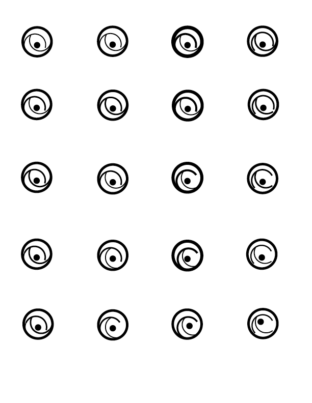

SYMBOL
The symbol exercise goes through the process of logo design and how sketch themselves really play an important role in design. Documentation of every slight change can help you compare what design works best with the content. This exercise also shows how a simple point with different weight can create tension, as well as, focusing on creating the right about of positive and negative space in a composition.
